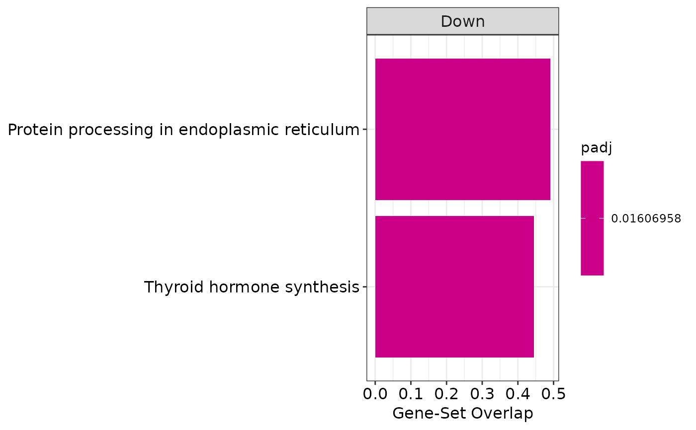

This function produces a barplot to show the results of functional
enrichment analyses carried out through over-representation analysis (ORA),
gene set enrichment analysis (GSEA), and competitive gene set test accounting
for inter-gene correlation (CAMERA). In particular, this function can take
as input enrichment results generated by the enrichGenes() function.
Usage
enrichmentBarplot(
enrichment,
showTerms = 10,
showTermsParam = "ratio",
splitDir = TRUE,
title = NULL
)Arguments
- enrichment
An object of class
FunctionalEnrichmentcontaining enrichment results- showTerms
It is the number of terms to be shown, based on the order determined by the parameter
showTermsParam; or, alternatively, a character vector indicating the terms to plot. Default is10- showTermsParam
The order in which the top terms are selected as specified by the
showTermsparameter. It must be one ofratio(default),padj,pvalandoverlap- splitDir
Logical, if
TRUEthe resulting plot will be divided in two columns on the basis of enrichment direction (Up and Down). Default isTRUE. This only applies if enrichment method is GSEA or CAMERA- title
The title of the plot. Default is
NULLnot to include a plot title
Details
When producing a barplot with this function, significant pathways are ordered on the x-axis on the basis of the ratio between the number of overlapping genes in that set, and the total number of genes in the set. Moreover, the color scale of dots is relative to the adjusted p-values of each category.
Author
Jacopo Ronchi, jacopo.ronchi@unimib.it
Examples
# load example FunctionalEnrichment object
obj <- loadExamples("FunctionalEnrichment")
# plot results
enrichmentBarplot(obj)
